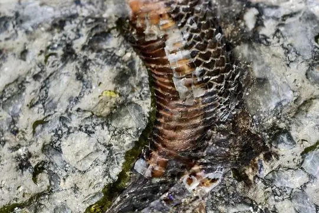

Toxicocalamus
The genus Toxicocalamus (family Elapidae) has 23 living species in SnakeList (all venomous), recorded in 2 countries.
- 23living species
- 23venomous
- 2countries
About the genus
A genus of the family Elapidae (cobras, mambas, coral snakes, sea snakes and relatives).
Species
Showing 23 species
- No photo yetBlack Forest SnakeToxicocalamus atratus
- No photo yetBuerger's Forest SnakeToxicocalamus buergersi
- No photo yetCloudy Mountains Forest SnakeToxicocalamus pachysomus
- No photo yetGoodenough Island Forest SnakeToxicocalamus goodenoughensis
- No photo yetLoria Forest SnakeToxicocalamus loriae
- No photo yetManagalas Plateau SnakeToxicocalamus pumehanae
- No photo yetMisima Island Forest SnakeToxicocalamus misimae
- No photo yetMount Lamington Forest SnakeToxicocalamus lamingtoni
- No photo yetMt Rossel Forest SnakeToxicocalamus holopelturus
- No photo yetMt Simpson Forest SnakeToxicocalamus mattisoni
 Owen Stanley Range Forest SnakeToxicocalamus stanleyanus
Owen Stanley Range Forest SnakeToxicocalamus stanleyanus- No photo yetPreuss's Forest SnakeToxicocalamus preussi
- No photo yetSetekwa River Forest SnakeToxicocalamus grandis
- No photo yetSpotted Forest SnakeToxicocalamus spilolepidotus
- No photo yetStar Mountains Worm-Eating SnakeToxicocalamus ernstmayri

Striped Forest SnakeToxicocalamus vertebralis- No photo yetSudest Island Forest SnakeToxicocalamus mintoni
 Woodlark Island Forest SnakeToxicocalamus longissimus
Woodlark Island Forest SnakeToxicocalamus longissimus- No photo yetToxicocalamus buegersi
- No photo yetToxicocalamus cratermontanus
- No photo yetToxicocalamus longhagen
- No photo yetToxicocalamus nigrescens
- No photo yetToxicocalamus spilorhynchus
No snakes in Toxicocalamus match.
About the genus Toxicocalamus
- Distribution: living species recorded in 2 countries, on 2 continents: Asia, Oceania.
- Family: Elapidae.
- Countries and territories: Indonesia, Papua New Guinea.
Compare its species
Its living species side by side. Lengths come only from SnakeList’s reviewed, sourced accounts; the others are left blank rather than guessed.
| Species | Venom | Recorded in | Adult length (reviewed accounts) |
|---|---|---|---|
| Black Forest Snake Toxicocalamus atratus | Venomous | 1 country (Oceania) | No reviewed account yet |
| Buerger's Forest Snake Toxicocalamus buergersi | Venomous | 1 country (Oceania) | No reviewed account yet |
| Cloudy Mountains Forest Snake Toxicocalamus pachysomus | Venomous | 1 country (Oceania) | No reviewed account yet |
| Goodenough Island Forest Snake Toxicocalamus goodenoughensis | Venomous | 1 country (Oceania) | No reviewed account yet |
| Loria Forest Snake Toxicocalamus loriae | Venomous | 1 country (Oceania) | No reviewed account yet |
| Managalas Plateau Snake Toxicocalamus pumehanae | Venomous | 1 country (Oceania) | No reviewed account yet |
| Misima Island Forest Snake Toxicocalamus misimae | Venomous | 1 country (Oceania) | No reviewed account yet |
| Mount Lamington Forest Snake Toxicocalamus lamingtoni | Venomous | 1 country (Oceania) | No reviewed account yet |
| Mt Rossel Forest Snake Toxicocalamus holopelturus | Venomous | 1 country (Oceania) | No reviewed account yet |
| Mt Simpson Forest Snake Toxicocalamus mattisoni | Venomous | 1 country (Oceania) | No reviewed account yet |
| Owen Stanley Range Forest Snake Toxicocalamus stanleyanus | Venomous | 2 countries (Asia, Oceania) | No reviewed account yet |
| Preuss's Forest Snake Toxicocalamus preussi | Venomous | 2 countries (Asia, Oceania) | No reviewed account yet |
| Setekwa River Forest Snake Toxicocalamus grandis | Venomous | 1 country (Asia) | No reviewed account yet |
| Spotted Forest Snake Toxicocalamus spilolepidotus | Venomous | 1 country (Oceania) | No reviewed account yet |
| Star Mountains Worm-Eating Snake Toxicocalamus ernstmayri | Venomous | 1 country (Oceania) | No reviewed account yet |
| Striped Forest Snake Toxicocalamus vertebralis | Venomous | 1 country (Oceania) | No reviewed account yet |
| Sudest Island Forest Snake Toxicocalamus mintoni | Venomous | 1 country (Oceania) | No reviewed account yet |
| Woodlark Island Forest Snake Toxicocalamus longissimus | Venomous | 1 country (Oceania) | No reviewed account yet |
| Toxicocalamus buegersi | Venomous | 1 country (Oceania) | No reviewed account yet |
| Toxicocalamus cratermontanus | Venomous | 1 country (Oceania) | No reviewed account yet |
| Toxicocalamus longhagen | Venomous | 1 country (Oceania) | No reviewed account yet |
| Toxicocalamus nigrescens | Venomous | 1 country (Oceania) | No reviewed account yet |
| Toxicocalamus spilorhynchus | Venomous | 1 country (Oceania) | No reviewed account yet |